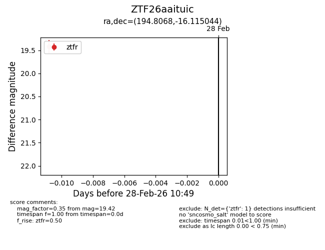
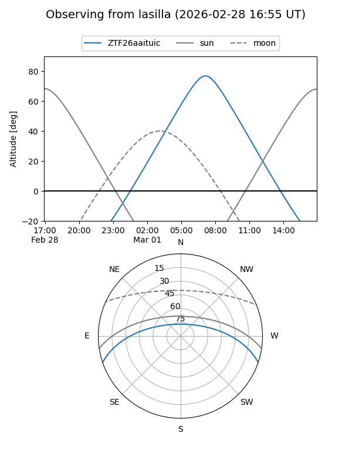
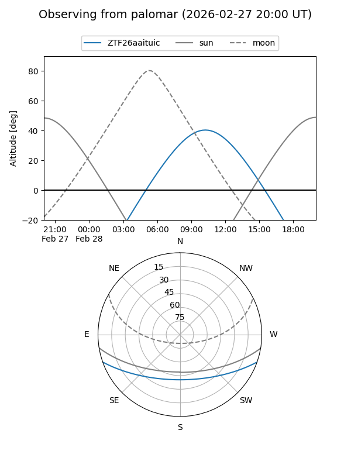

ZTF26aaituic
Target ZTF26aaituic at 2026-02-28 10:50
Aliases and brokers:
FINK: link
Lasair: link
ALeRCE: link
alt names
ZTF26aaituic (ztf,fink_ztf)
Coordinates:
equatorial (ra, dec) = 194.8068,-16.11504
equatorial (HMS+DMS) = 12:59:13.62,-16:06:54.16
galactic (l, b) = (305.6610,+46.71542)
Flags:
Photometry:
last ztfr=19.42
1 ztfr detections
Lightcurve

Visibility


Additional plots